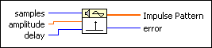
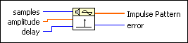
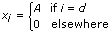

Impulse Pattern VI
Owning Palette: Signal Generation VIs
Requires: Full Development System
Generates an array containing an impulse pattern.

 Add to the block diagram Add to the block diagram |
 Find on the palette Find on the palette |
Owning Palette: Signal Generation VIs
Requires: Full Development System
Generates an array containing an impulse pattern.

| Add to the block diagram |
Find on the palette |
 |
samples is the number of samples of the Impulse Pattern. samples must be greater than delay. The default is 128. If samples is negative or zero, the VI sets Impulse Pattern to an empty array and returns an error. |
 |
amplitude is the amplitude of Impulse Pattern. The default is 1.0. |
|
delay is the index within Impulse Pattern at which the impulse occurs. delay must be greater than or equal to 0. If delay is less than zero, or greater than or equal to the number of samples, the VI sets Impulse Pattern to zero and returns an error. |
 |
Impulse Pattern is the output array containing the impulse pattern. The largest Impulse Pattern the VI can generate depends on the amount of memory in your system and is theoretically limited to 2,147,483,647 (231 – 1) elements. |
 |
error returns any error or warning from the VI. You can wire error to the Error Cluster From Error Code VI to convert the error code or warning into an error cluster. |
If the Impulse Pattern is represented by the sequence X, the Impulse Pattern VI generates the pattern according to the following equation.

for i = 0, 1, 2, …, n – 1,
where A is the amplitude, d is the delay, and n is the number of samples.